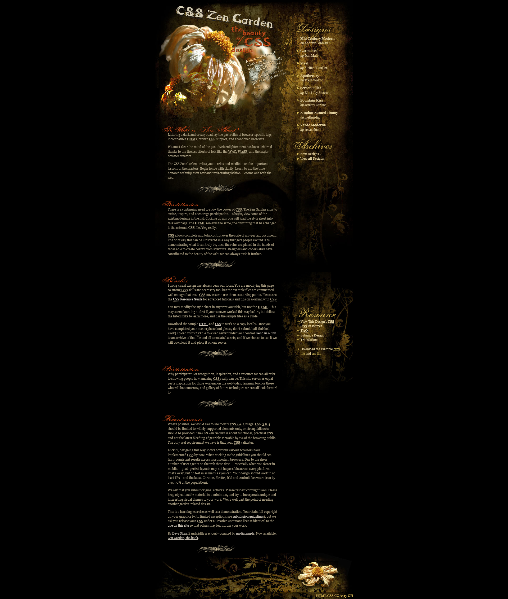

Era 6: Grid era and modern platform CSS (2017-2026)
CSS Grid Layout becomes a cornerstone for real layout work and modern CSS grows into a system language for design. The Grid spec continues evolving as a living collection of modules.
What defines this era
- Grid layouts (2D layout)
- Custom properties (CSS variables)
- Modern selectors and better component styling
- Design systems and theming as normal practice
Major people and groups
- CSS Working Group (W3C): editors and contributors across browsers.
- Elika J. Etemad (fantasai): major editor and standards leader.
- Tab Atkins: long-time standards editor and explainer author.
- Jen Simmons, Rachel Andrew, Miriam Suzanne: education and advocacy for modern layout.
What authors actually did
- Grid-first layouts replacing framework-only grids.
- Utility CSS and design systems at scale.
- Progressive enhancement: use modern features when available, graceful fallback otherwise.
- Dark mode using
prefers-color-scheme.
Why modern CSS feels "alive"
CSS evolves through modules that ship when browsers implement them and tests confirm behavior. Instead of a single "CSS4," improvements arrive continuously.
Artifact: CSS Grid Layout (2017)
Title: CSS Grid Layout Module Level 1
Year: 2017
Key educators: Rachel Andrew, Jen Simmons
CSS Grid became available in all major browsers in March 2017. For the first time, CSS had a true two-dimensional layout system. Authors could define rows AND columns simultaneously, place items precisely on a grid, and create complex layouts without hacks.
Example Grid code:
.layout {
display: grid;
grid-template-columns: 250px 1fr;
grid-template-rows: auto 1fr auto;
gap: 16px;
}
Why it mattered: Grid replaced decades of float hacks, framework grids, and Flexbox workarounds for page layout. Rachel Andrew's educational work and Jen Simmons' "Layout Land" videos taught thousands of developers how to use Grid effectively.

Artifact: CSS Custom Properties (Variables)
Title: CSS Custom Properties for Cascading Variables
Year: 2017 (broad browser support)
Key spec editor: Tab Atkins
Custom properties (CSS variables) let authors define values once and reuse them throughout a stylesheet. Unlike preprocessor variables (Sass, Less), CSS custom properties are live in the browser, cascade normally, and can be changed with JavaScript at runtime.
:root {
--color-primary: #0969da;
--spacing: 16px;
}
.card {
color: var(--color-primary);
padding: var(--spacing);
}
Why it mattered: Variables made CSS design systems practical. Theming (including dark mode) became a matter of swapping a few variable values rather than rewriting entire stylesheets.

Why this era replaced the previous one
Flexbox solved one-dimensional layout but complex page structures still required nesting and workarounds. CSS Grid provided the missing two-dimensional layout. Custom properties removed the need for CSS preprocessors in many cases. Container queries (arriving in 2023) completed the picture by letting components respond to their own size, not just the viewport.
Limitations that remain
- Some advanced features still lack full browser support.
- The spec surface area is now enormous; learning CSS is harder than ever.
- Legacy browser support requirements slow adoption of newest features.